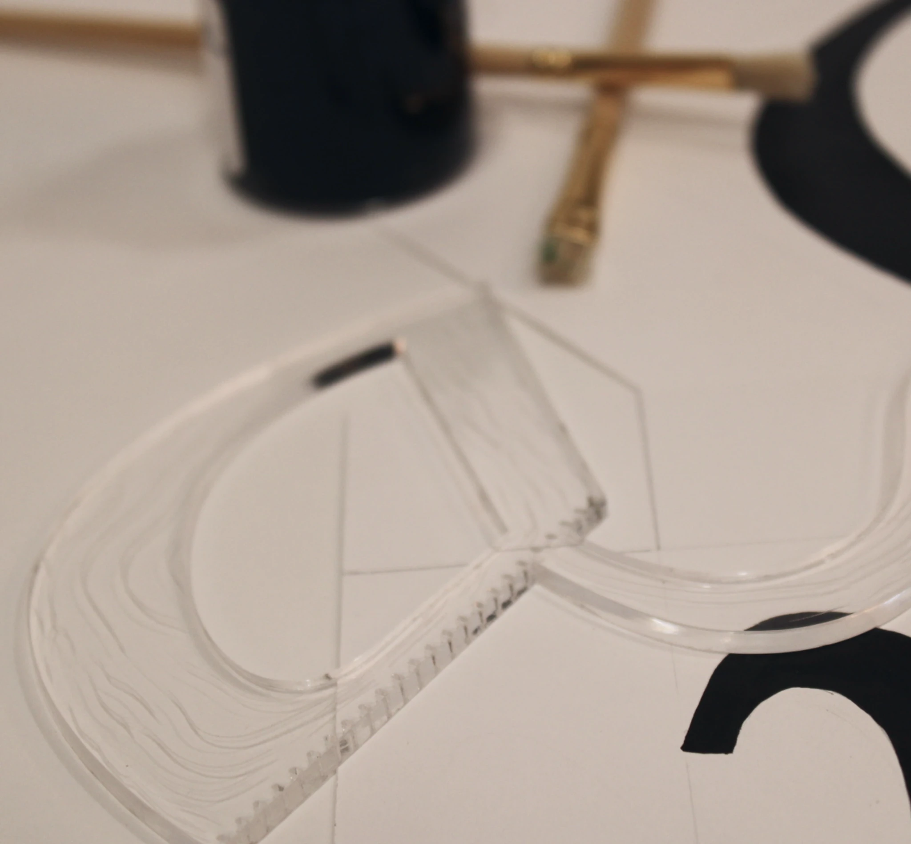
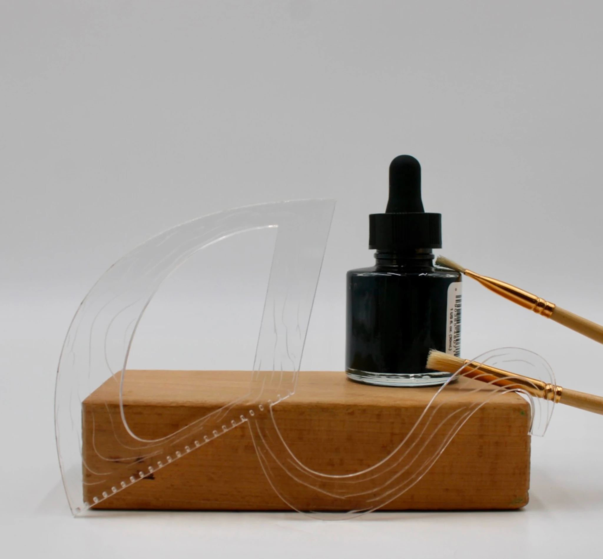
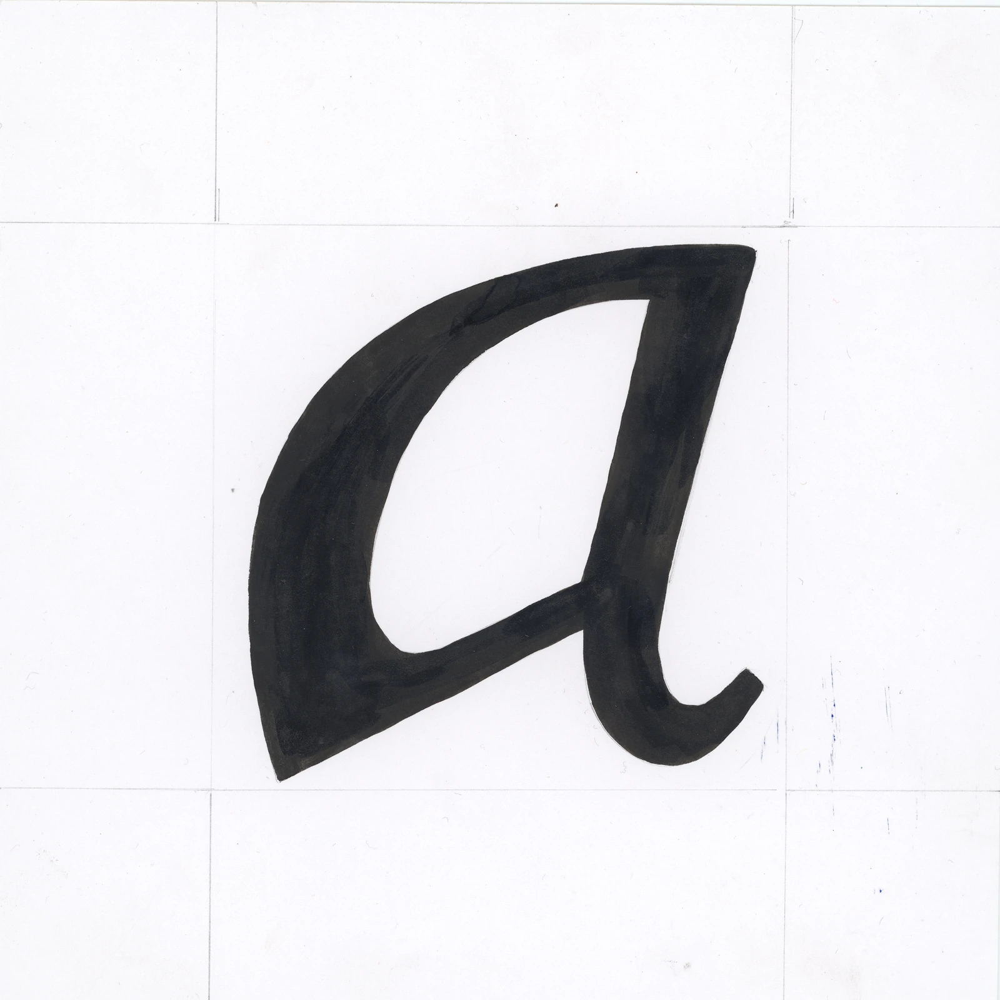
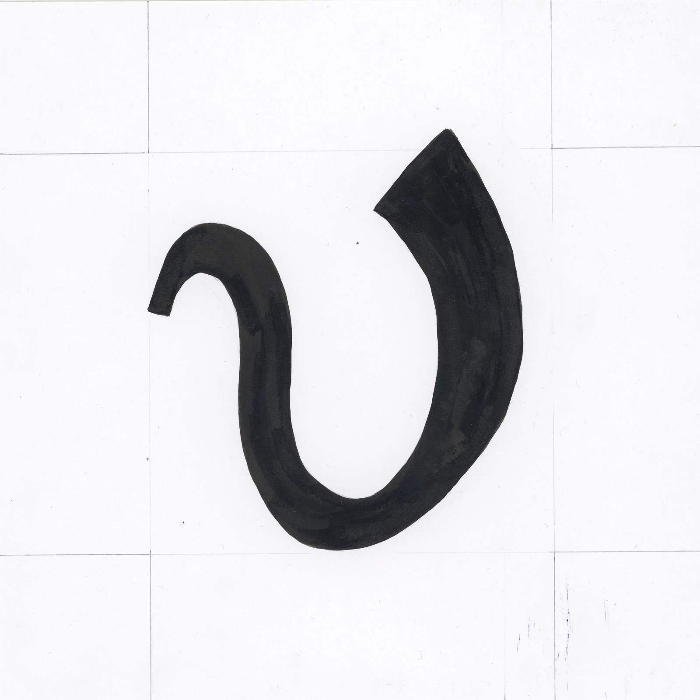
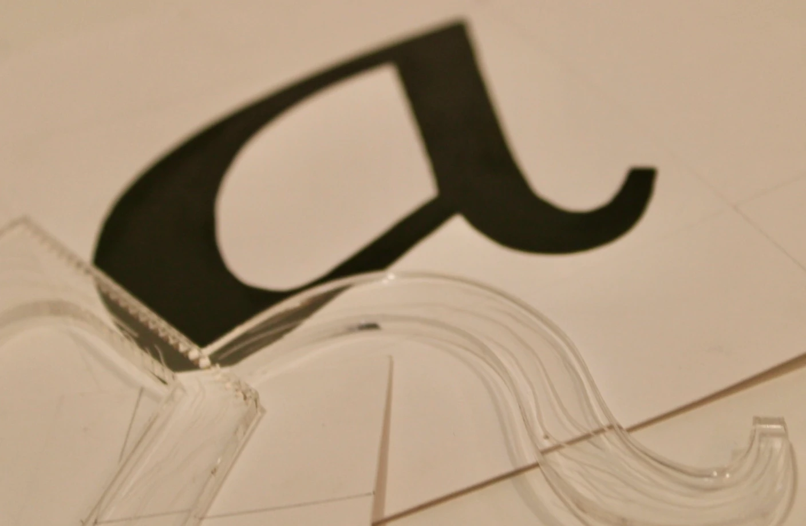
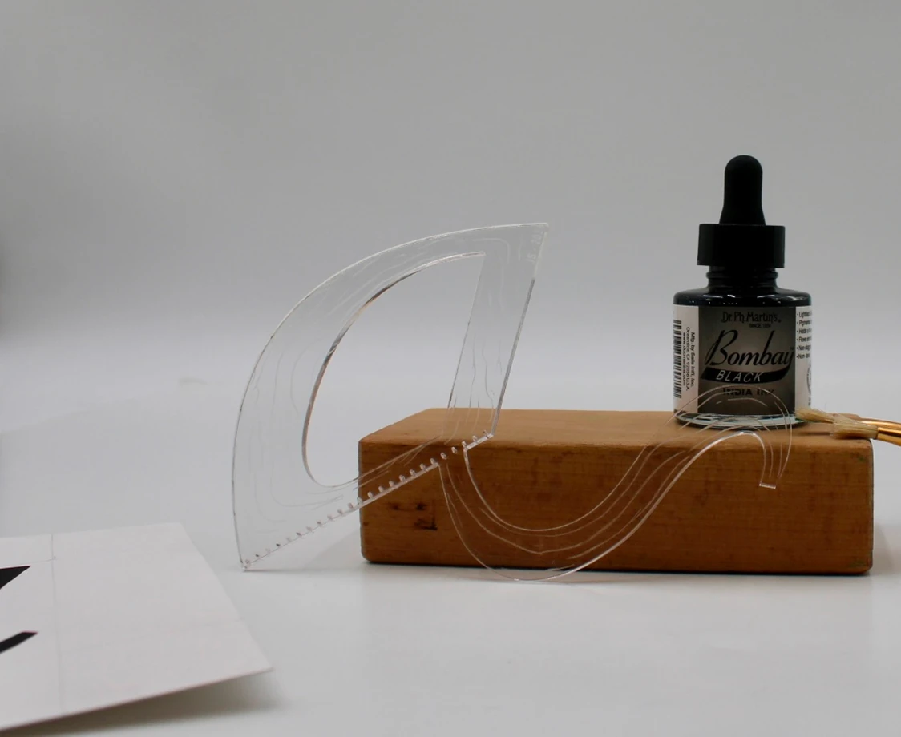
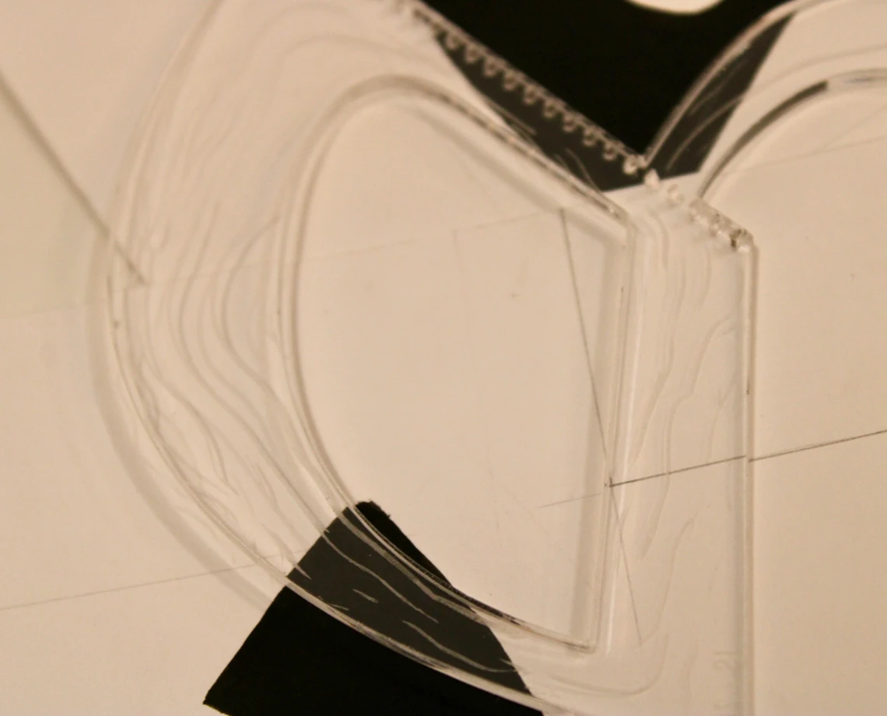
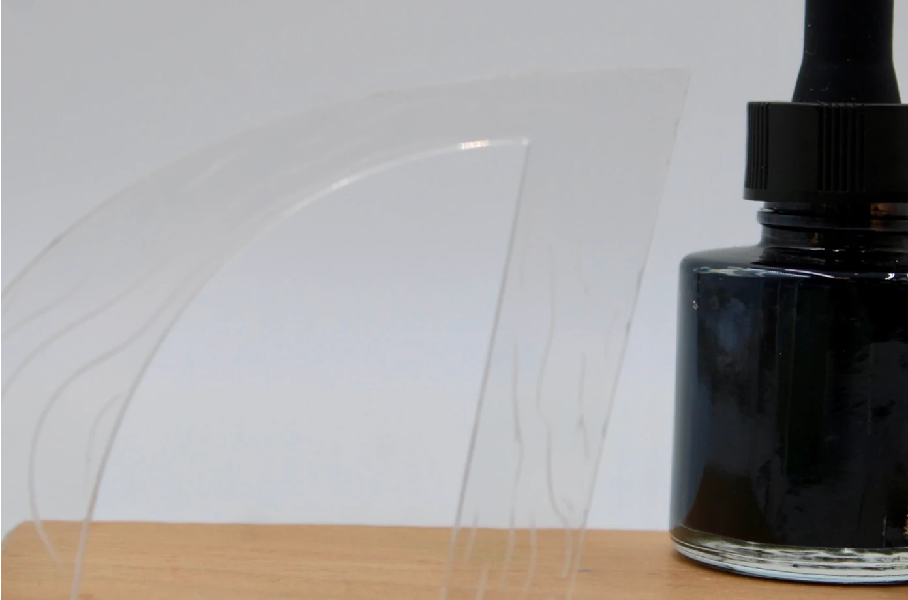

LETTER EXCHANGE
2026


FROM TOOL TO TYPE
Exploring the relationship between tools and typography, this project began with a letter exchange in which classmates acted as clients, assigning two letters and a type classification. I was tasked with creating the lowercase a and v in an Old Style serif style.
To construct the letters, I designed and laser-cut a custom acrylic drafting tool inspired by traditional French curves. The letterforms were then drafted and inked by hand before being translated into digital vectors, exploring how the tools we use influence the shapes of the letters themselves.


DETAILS
MATERIALS
Acrylic
Adobe Illustrator
Bristol Board
India Ink
DIMENSIONS
4 in x 4 in




BEYOND THE LETTERFORMS
The project continued beyond the individual letters, bringing together letterforms created by the class into a series of typographic compositions. Through overlapping shapes, color, and scale, the letters became the foundation for a new exploration of typography.